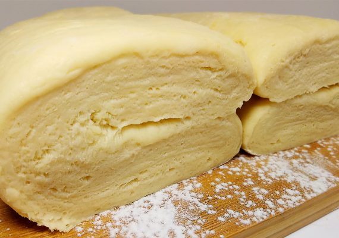

Виды теста
Дрожжевое тесто это полуфабрикат, готовится из муки, воды и дрожжей. В зависимости от конечного продукта добавляют сдобу (соль, сахар, молоко, жир и прочее) и начинку (орехи, семечки, зёрна, фрукты, бобы и прочее). Продукты из дрожжевого теста пекут в печи, жарят в жиру и варят над паром или в горячей воде. При этом дрожжевое тесто сильно увеличивается в объёме. Обычно такое тесто требует расстойки перед печкой.
Слоёное тесто — тесто, используемое при выпечке слоёных пирожков, булочек, самсы, других кулинарных изделий — слоек. Характерной особенностью слоёного теста является то, что основным его компонентом является масло (животное или растительное), составляющее по весу почти столько же, сколько и мука. Слойкой на профессиональном языке кулинаров может называться само тесто
Сдобное тесто — тесто с содержанием сахара и жиров в сумме не менее 14 % к массе муки. Сдобное тесто может быть как дрожжевым так и пресным (бездрожжевым). Дрожжевое тесто становится сладким (сдобным), если сахар составляет более 4% от веса ингредиентов, до этой величины сахар сьедают дрожжи в процессе брожения.

Песочное тесто — тесто с большим содержанием жира (26 %) и сахара (18 %), с содержанием влаги не более 20 %. Основным разрыхляющим компонентом является жир, обволакивающий частички муки, не давая им склеиваться друг с другом. Для большего разрыхления применяют только химические разрыхлители, так как дрожжи в таком сдобном и маловлажном тесте эффективно развиваться не могут.
Из песочного теста выпекают пироги, торты, пирожные; из ароматизированного песочного теста (с ванилином, пряностями) — печенье.
Бискви́т (фр. biscuit от итал. biscotto — «печённый дважды») — кондитерское тесто и кондитерский «хлеб», приготовленный из муки, сахара и яиц. В англоязычных странах термин «бисквит» употребляется для других продуктов.
Заварное тесто — тесто, мука для которого частично или полностью заваривается кипятком. При таком способе обработки муки содержащийся в ней крахмал клейстеризуется и удерживает большее количество воды, чем обычно. Клейковина при этом уплотняется и во время выпекания не даёт парам воды выйти наружу, поэтому внутри теста образуются пустоты[1].
Подняться НАВЕРХ